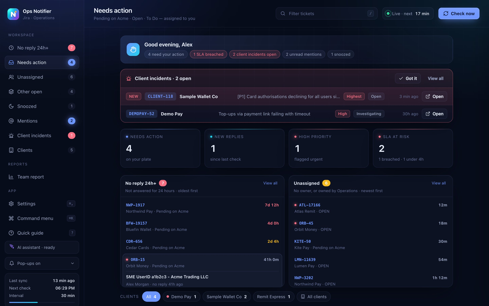
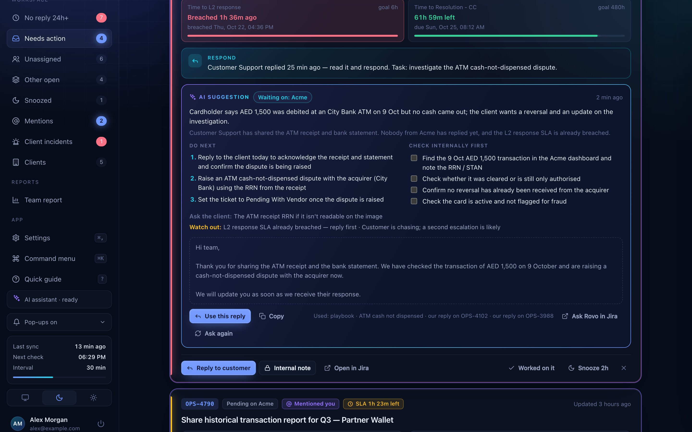
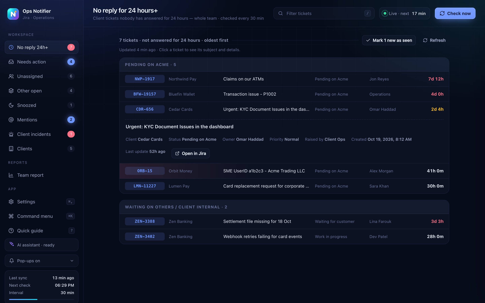
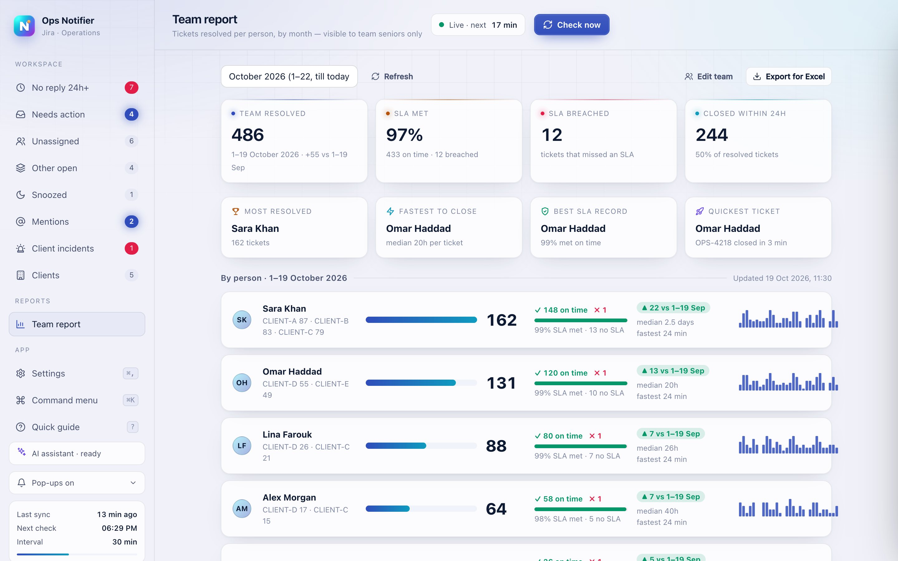
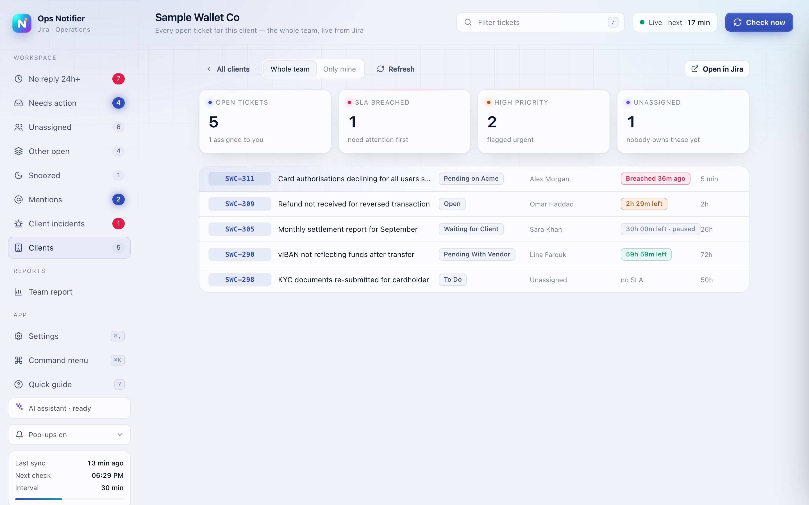
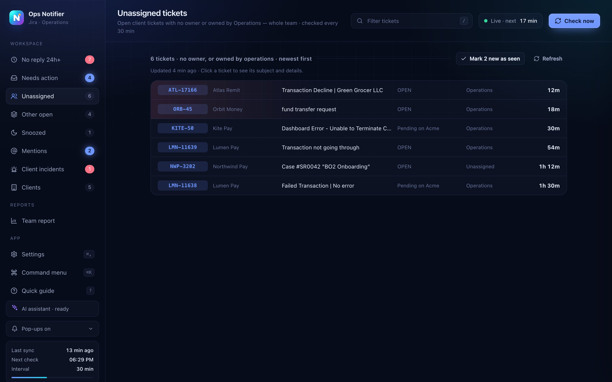

01 · DESKTOP APP
Ops Notifier — never miss a ticket
Operations teams live in Jira, but Jira waits for you to look. This desktop app watches it for you and pops up the moment something needs attention.
- Desktop pop-ups for new tickets, replies and @mentions — client incidents alert the whole team
- A warning 30 minutes before any ticket breaches its SLA
- Team views: tickets with no reply for 24 hours, and tickets nobody owns
- A monthly team scorecard: resolved, SLA met vs breached, fastest to close
- A free AI that runs on the laptop, reads the ticket and suggests the next steps and a reply
- One-click install on Mac and Windows; everyone sets their own check timings